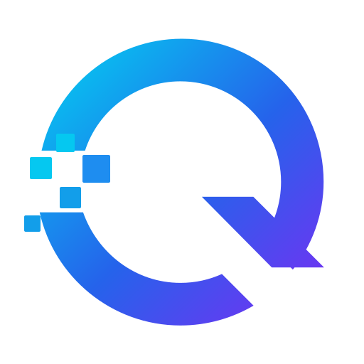

⌘
01
Desarrollo Web
Sitios modernos, rápidos y responsivos para presentar marcas, servicios o proyectos con una imagen profesional.

Quantyra CR
Creamos soluciones digitales limpias y funcionales para negocios, profesionales y proyectos que necesitan organizar información, mejorar procesos y proyectar una imagen más sólida.
Herramientas, sitios web y estructuras digitales creadas para funcionar con claridad.
Quantyra convierte ideas y necesidades operativas en soluciones digitales elegantes, entendibles y listas para crecer.
Servicios
Sitios modernos, rápidos y responsivos para presentar marcas, servicios o proyectos con una imagen profesional.
Formularios claros, editables y bien estructurados para recopilar solicitudes, datos y registros importantes.
Organización de información en estructuras más seguras, consultables y preparadas para crecer con el proyecto.
Reducción de tareas repetitivas mediante flujos simples, herramientas digitales y procesos más ordenados.
Clasificación, limpieza y estructuración de datos para que la información sea más fácil de entender y utilizar.
Acompañamiento técnico para crear soluciones digitales acordes con necesidades reales, sin exceso ni complicación.
Método Quantyra
Revisamos la necesidad, el objetivo y la información disponible.
Ordenamos la solución antes de construirla para evitar improvisaciones.
Diseñamos e implementamos una herramienta funcional y visualmente limpia.
Pulimos detalles, validamos uso real y dejamos una base lista para evolucionar.
Sobre Quantyra
Quantyra nace para crear soluciones digitales que se sientan claras desde el primer uso. La meta es combinar estética, orden técnico y utilidad real en cada proyecto.
Nuestro enfoque no es complicar la tecnología, sino convertirla en una herramienta práctica, elegante y fácil de implementar.
Contacto
Comparte tu idea, necesidad o proceso actual. Quantyra puede ayudarte a convertirlo en una herramienta clara, profesional y lista para usarse.